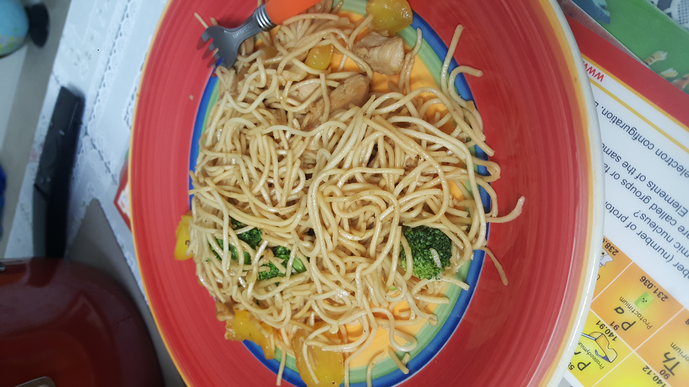

I like many foods from cakes to pasta and much more. This page shows some sweet and savory dishes that me and my mom made.
Yule logs are one of my favorite deserts! They taste absolutely awesome! I first tasted a yule log when my mom made it. She made two flavors, one of them was coffee/chocolate and I'm not really sure what the other one was. The moment I tasted the coffee one, I went crazy about Yule logs!! The picture below shows the coffee log on the right and the other one on the left.
My mom always bakes cakes for all family members on their birthdays. The image below is a picture of a birthday cake that my mom made for me with Elsa's picture on the top. At the time, I was a pretty big fan of Frozen which is why my mom made a cake based off of it.
Here are pictures of more cakes that my mom made. Many of them are best viewed in a 3D view rather than in a picture because the cakes' awesome features are all around it!
Once, I got a recipe book from the library. It had a lot of cool recipes that I wanted to make, and I chose to make the chicken chow mein. I had always wanted to try it, because chicken chow mein sounded really delicious. Then, one day I actually made it, and it was one of my first ever dishes that I made on my own with barely any help from my parents(they only did the chicken cleaning part for me). In the end, it tasted fairly good, except the fact that it ended up a little bland.
